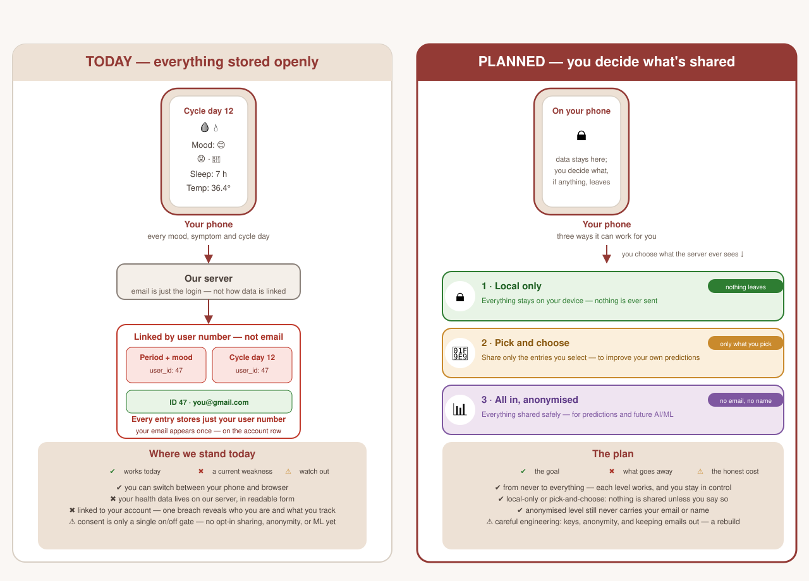

| No. | Question | Drafted answer |
|---|---|---|
| 1 | Which hosting provider and database do we use for the Beta, and in which server region is the data stored? |
Hosting: Render (render.com) — platform-as-a-service. App runs at seasonv2.onrender.com.
Database: PostgreSQL (Render-managed), database season, user season, Pro plan. Rails is configured for PostgreSQL only (config/database.yml, adapter postgresql).
Region: Frankfurt (EU Central) for both the web service and the database — data is stored inside the EU, so no additional transfer safeguards (Standard Contractual Clauses) are needed for the hosting location itself. confirmed source: Render dashboard (service + database region) · render.yaml, config/database.yml
|
| 2 | Who has access to the production database? Please list roles (or names) and the number of people. |
The codebase defines an application admin role (User#admin?, routes under /admin/*, separate /admin/login), but production database access is not enumerable from the repo — it is granted via the Render Postgres connection string (DATABASE_URL env var) and the Render dashboard.
Access: the Render account is under Season UG; a single admin account, naijeria@season.vision (role: Admin). One person, one account.
confirmed — only account currently. |
| 3 | From which countries is the database accessed, and through which company (Season UG directly or Mama Tech Limited)? |
The contracting party named throughout the legal texts is Season UG (haftungsbeschränkt) — a German entity. Consent copy also references Season UG as the data controller.
Access: the database is accessed only via the Season UG account ( @season.vision). No access through Mama Tech Limited, so no third-country transfer and no SCCs are needed on that front.
confirmed source: docs/legal/terms.en.html, app/services/consents/recorder.rb + account info
|
| 4 | Is two-factor authentication active for all admin accounts (hosting, database, code repository, App Store Connect, Google Play Console)? |
Yes — 2FA is active on all four: Render, GitHub, App Store Connect and Google Play Console.
For context, the app's end-user auth also includes WebAuthn passkeys with a PIN fallback ( webauthn_controller.rb, PinProtection concern) — separate from infra admin accounts.
confirmed |
| No. | Question | Drafted answer |
|---|---|---|
| 5 | Is the database encrypted at rest (by the hosting provider or by us)? |
At rest: yes, by the hosting provider. Render encrypts Postgres data at rest with AES-256, and database connections use Render-managed TLS certificates. The Notice can truthfully say "encrypted at rest by the hosting provider (AES-256)".
Field-level / application encryption: not yet enabled by us. The backlog lists pgcrypto as a post-launch item and OAuth/iCloud credentials are still stored unencrypted — so do not claim field-level encryption yet. confirmed — Render docs: AES-256 at rest + TLS for connections. |
| 6 | Backups: where stored, how often, how long kept? |
We are on the Render Pro plan. Backups: point-in-time recovery covers the past 7 days; logical backups are retained 7 days after creation (Render docs).
So deleted data can survive in backups for up to 7 days — "deleted within 30 days" is comfortably covered; the precise wording is "removed from backups within 7 days". confirmed — Render docs: PITR 7 days, logical backups 7 days. |
| 7 | Server/app logs: what do they contain and how long are they kept? Can we limit to 30 days? |
Rails logs to STDOUT at warn level with request_id tags (production.rb) — at that level no health data is deliberately logged. Sentry captures errors (SENTRY_DSN).
No log-retention setting exists in the repo. decided — set log retention to 30 days in Render and Sentry; the Notice can state "technical logs kept 30 days". |
| 8 | After account deletion, how long until data is removed from the live database? |
Immediately from the live DB: DELETE /account → @user.destroy! hard-deletes the account row and all associated records (dependent: :destroy).
Backups are retained for 7 days (Q6), so the precise statement is "permanently erased within 7 days"; "within 30 days" is a safe upper bound. confirmed source: account_controller.rb
|
| 9 | Planned improvements (end-to-end / field-level encryption, separating account & health data) + timeline? |
Planned with a rough 3-month timeline and a staggered approach — roll the three levels out incrementally, prioritised by Beta feedback. The target model (per the data-storage plan) is local-first: data stays on the device by default and the person chooses what, if anything, leaves — with three levels:
docs/AUDIT-2026-08-15-SECURITY.md and the backlog as post-launch.
timeline — roughly 3 months, staggered (build the storage levels incrementally). |
| No. | Question | Drafted answer |
|---|---|---|
| 10 | Which third-party services run in the app / web app (name, purpose, server location)? |
From the Gemfile + env (render.yaml):
Shanel to confirm — the server location for each provider (Resend, Sentry, Trello). |
| 11 | Do we have data processing agreements (Art. 28 GDPR) with these providers? |
No DPAs are evidenced in the repo. The GDPR audit lists DPAs with Render, Resend and Sentry as outstanding.
What this means: a DPA (data processing agreement, GDPR Art. 28) is the contract that makes a third party legally allowed to process user data on Season's behalf. Most providers (Render, Resend, Sentry, Google, Apple, Meta) already offer a standard DPA you accept or sign in their dashboard — usually free. action — sign/accept each provider's DPA before real user data is processed; keep a record of the dates. |
| 12 | Any analytics, tracking or advertising SDKs? |
None. No analytics/tracking/advertising SDKs in the Gemfile or JavaScript (verified against the codebase).
The outdated in-app privacy page ( app/views/legal/privacy.html.erb) has been retired — it claimed "Usage Data … for analytics", which contradicted "no analytics".
confirmed "none" + done privacy page retired. |
| 13 | What tester data do we see in App Store Connect / TestFlight and Google Play Console? |
Console-level and platform-defined: typically names, emails, device model, crash logs, and any in-TestFlight feedback.
confirmed — for the "Apple and Google" section. |
| No. | Question | Drafted answer |
|---|---|---|
| 14 | Which login methods does the Beta offer? |
Email + password (Devise), plus Sign in with Apple, Google and Facebook (omniauth gems).
confirmed source: config/initializers/devise.rb, Gemfile
|
| 15 | Can users delete single entries, delete their account, and export data? Where? |
account_controller.rb, routes
|
| 16 | In-app option to withdraw consent to health-data processing? |
Yes. Settings → Data & Privacy (/settings/consent) has per-type checkboxes + Save, backed by ConsentController#destroy.
The texts can therefore say withdrawal is available in-app (and by email) — no need to describe it as email-only. confirmed source: app/views/settings/consent.html.erb, consent_controller.rb
|
| 17 | Are consents stored per account with timestamp and text version? |
Yes. Beta funnel: consent_records stores consent_type, granted, doc_version, text_sha256, language, IP, user agent and created_at. Registered users: user_consents with granted_at/revoked_at.
confirmed source: db/schema.rb, consents/recorder.rb
|
| 18 | Does the web app store anything in the browser (cookies, local storage)? Only for login/settings? |
Functional only: Rails session cookie, an encrypted 7-day "remember me" cookie, localStorage for UI prefs (holiday country, last login email) and sessionStorage for one-off dismissals (PWA install prompt, no-cycle-data modal).
No third-party/tracking cookies → no cookie banner needed. confirmed source: app/javascript/controllers/*, authentication.rb
|
| 19 | Does the app show fertile days, ovulation or a basal temperature curve? |
Shows cycle phases incl. ovulation, cycle predictions, logs basal body temperature, has an "ovulation alert" notification and discharge guidance referencing the fertile window. A dedicated "fertility" score card in Forecast is currently commented out (not shown).
⚠️ Relevant to the medical-device risk — keep the "not for contraception" wording in the texts. confirmed source: forecast/index.html.erb, settings/notifications.html.erb, symptoms/discharge.html.erb
|
| 20 | Free-text notes field? Can calendar entries contain names of other people? |
Yes to both. Symptom logs and superpower logs have a free-text notes field; calendar events have title, notes and a guests field (other people's names can be stored).
confirmed source: db/schema.rb (symptom_logs, calendar_events)
|
| 21 | Under which URL will the web app run, and where are the legal texts linked? |
Web app: seasonv2.onrender.com (welcome + countdown).
Beta legal texts: /legal/terms and /legal/privacy (LegalController), linked from the beta funnel; also /terms and /privacy in Settings.
confirmed source: config/routes.rb, render.yaml
|

Today: every mood, symptom and cycle day is stored on our server, linked to the account by a user number (not email). It is encrypted at rest by the host (AES-256) but not field-level encrypted — readable by anyone with database access. Consent is a single on/off gate.
Planned: local-first storage where you decide what, if anything, leaves the device — local-only, pick-and-choose, or fully anonymised. A rebuild, not a quick change.
config.enable_pii = true, so error events can include IP, email and request params (possibly health data). Consider scrubbing before the Beta.docs/userdata.md already requires never appending health fields.